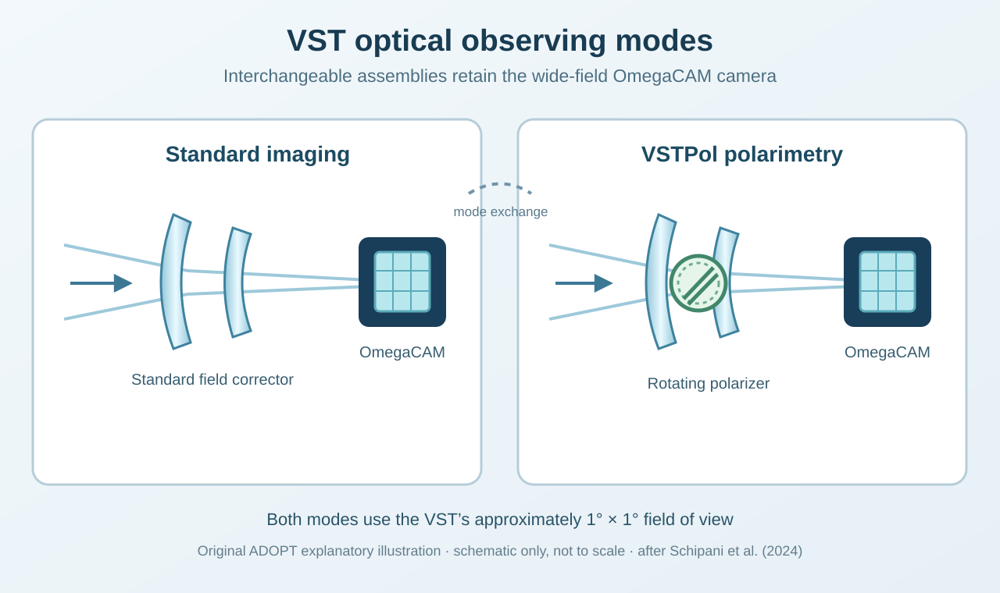

VSTPol
Wide-field linear optical polarimetry for the 2.6-m VLT Survey Telescope.
Figures


Our contribution
Group members Demetrio Magrin and Jacopo Farinato are co-authors of the published VSTPol instrumentation and system-engineering studies. Their involvement forms part of the wider multi-institute project and connects ADOPT expertise with the upgrade’s optical, mechanical and technical development.
Selected publications
Project concept, system engineering and control electronics. No on-sky VSTPol science results are claimed.
- VSTPOL: making the VST a large survey telescope for optical polarimetry ↗Proceedings of SPIE 13096, 130967L
Instrument concept and science cases; the open-access arXiv version was posted in 2025.
- VSTPOL: project management and system engineering activities for the new wide-field polarimetric mode of the VST ↗Proceedings of SPIE
Requirements, project management and the instrument's mechanical and electronic interfaces.
- VSTPOL: the control electronics design for the new polarimetric mode of the VST ↗Proceedings of SPIE
Control electronics based on PLC and EtherCAT industrial technology.